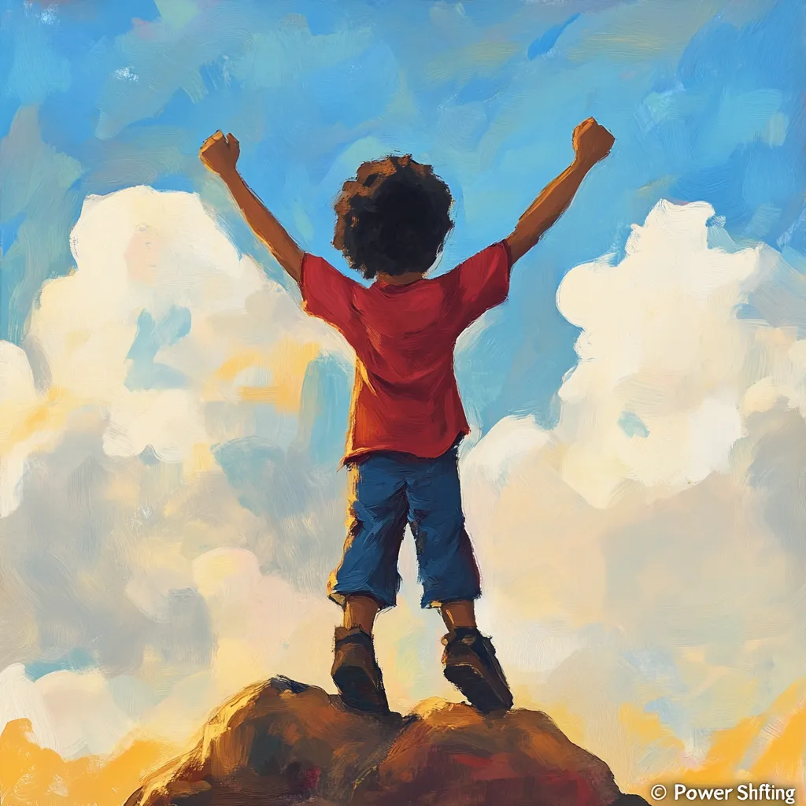
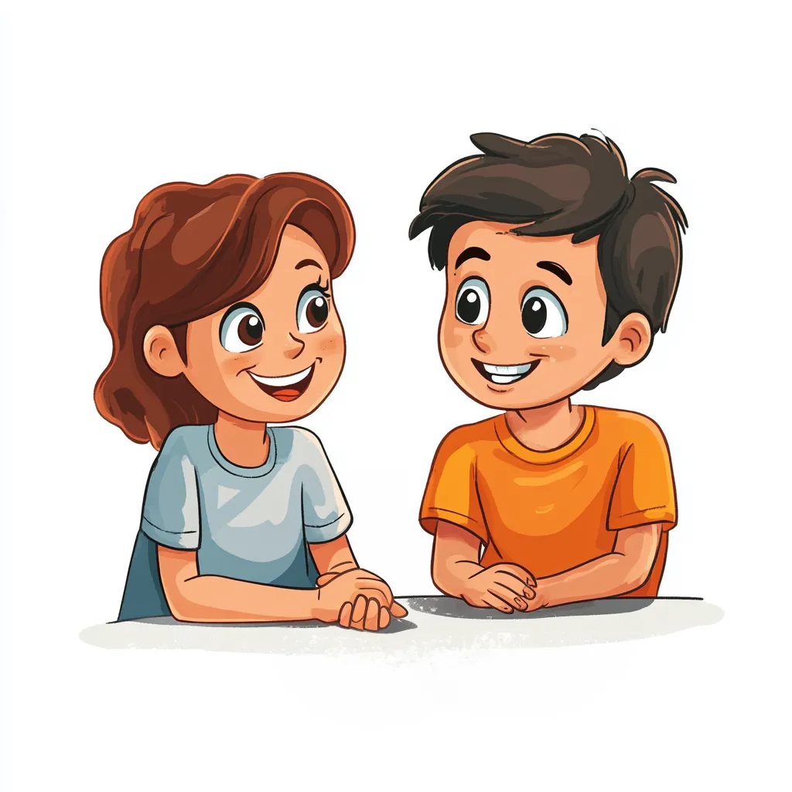

Liang was being told by his teacher that he was “bad all the time,” leaving his self-esteem shattered. After receiving zeros on his behavior chart for two straight months, he began telling his mom, “I was a zero again.”
Through stories like “Who’s Flying Your Plane?” and “Power Goggles”, Liang learned that he could be the pilot of his thoughts. He began to shift from feeling like a “zero” to saying proudly, “I am a good boy, and I can make good choices.”
Liang’s confidence grew. His teacher became more supportive, letting him lead LEGO projects. The principal even gave him a job delivering messages. His transformation not only brought joy to his family but reshaped his experience at school.

Jeff struggled with anger, sadness, and conflict at home and school. During coaching, he and his mom experienced an “aha” moment about how the mind works, helping Jeff feel empowered.
Through practicing positive self-talk and understanding emotional control, Jeff became more confident and calm. He realized, “How I talk to myself is up to me. I can shift my anger and feel happier.”
His mom noticed improved relationships at home and school, saying, “We are seeing big changes in Jeff and the rest of the family.” A transformation sparked by coaching, communication, and understanding.
Zoe was shy and hesitant to share her feelings. Through the MindPower™ and MePower™ workshops, she discovered the tools to manage her thoughts and emotions.
She now looks forward to her empowerment workshops. “We’ve learned we can change the ‘goggles’ we wear. I’m wearing my ‘Power Goggles’ not my ‘Victim Goggles’!”
Zoe’s mom shared, “These skills should be taught in school—just like reading and math. My daughter has benefited so much, and I encourage every parent to send their child.”